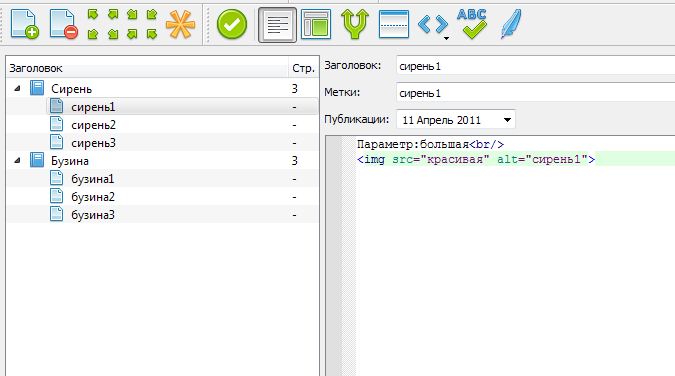
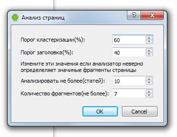

Импорт¶
CSV генератор¶

Пример файла импорта. Строки содержащие один элемент могут распозноваться как категории(см. настройки плагина).
"Сирень"
"сирень1","большая","красивая"
"сирень2","мелкая","неочень"
"сирень3","средняя","странная"
"Бузина","",""
"бузина1","зелёная","весёлая"
"бузина2","красная","грустная"
"бузина3","желтая","беглая"
Пример шаблона
Параметр:{$2}<br/>
<img src="{$3}" alt="{$1}">
Результат
Универсальный парсер¶
Универсальный  парсер служит для импорта текстового контента с сетевых ресурсов, анализируя их структуру в автоматическом режиме и выделяя важную информация(заголовок, текст).
парсер служит для импорта текстового контента с сетевых ресурсов, анализируя их структуру в автоматическом режиме и выделяя важную информация(заголовок, текст).
Первый шаг - импорт содержимого пауком.

- Начальный адрес
- Адрес, с которого начинается обход сайта пауком. Игнорируются все адреса которые не начинаются с этого значения.
- Глубина
- Количество рекурсивно запрашиваемых страниц.
- Игнорировать
- Регулярное выражения которое используется при обходе для удаления адресов из очереди. По умолчанию это изображения, медиафайлы, архивы.
- USER_AGENT
- То, как паук будет представляться сайту.
Шаг два - построение в автоматическом режиме шаблонов страниц, Вам необходимо задать лишь порог чуствительности.
- Порог кластеризации
- Порог различия фрагментов страниц содержащих значимый для импорта текст. При низком пороге возможен захват мусорного текста(меню, баннеры).
- Порог заголовка
- Порог различия фрагментов страниц содержащих заголовок.
- Анализировать не более
- Количество страниц для анализа. Чем больше, тем точнее будет сгенерирован шаблон. Однако анализ большого количества страниц занимает продолжительное время. 100 страниц - около 5 минут. 1000 страниц, более 3 часов.
- Количество дополнительных фрагментов
- Если значимый материал разбит на вложенные фрагменты(например блоками(div), таблицами) то повышения значения позволяет сгенерировать шаблон учитывающий это.
Третий шаг - импорт текста в Content Monster 2 в качестве статей.

- Порог соответствия шаблону
- Минимальное значение при котором найденный в статье текст будет считаться значимым.
- Порог отличия
- Максимальное значение, при котором найденный в статье текст будет считаться значимым.
- Минимальный размер статьи
- Позволяет избавится в выдаче от пустых, либо неверно экстрагированных статей.
CMS Simple¶
Читает HTML файл в формате CMS Simple с форматированием H1-8.
Импортируемые поля
- Заголовок
- Текст
Wordpress XML¶
Читает XML файл выгружаемый Wordpress версии 2.7 и выше.
Импортируемые поля:
- Заголовок
- Excerpt
- Текст
- Дата публикации
- Теги
- Категория
Парсер статей articlesbase/rusarticle¶
Плагин от Mihey для парсинга статей с известных статейных баз.
Импортируемые поля:
- Заголовок
- Текст
Примечание
Сервис имеет ограничение в 150 статей на один запрос.
Каталог TXT и HTML файлов(плагин)¶
Рекурсивно читает указанную директорию и формирует дерево статей по принципу: название каталога и файла - это заголовки, содержимое файлов - текст. Расширения: TXT, HTML, HTM, XHTML. Кодировка определяется по charset’у HTML либо автоматом по первым 2-м килобайтам текста.
Импортируемые поля:
- Заголовок
- Текст
RSS Feed¶
Импорт данных из лент новостей. Чтение из файла либо по адресу ленты. Поддержка форматов RSS, Atom, CDF.

Поля для статей:
- Заголовок
- Текст
Генератор текста “цепями Маркова”¶
Генератор текста построенные на базе цепей Маркова.

Исключительно как пример плагина.

Импорт страниц сайтов по ссылкам из RSS/Atom¶
Импорт страниц по ссылкам в RSS/Atom. Возможен импорт по адресу ленты либо имени файла.
Импорт на PHP¶
Пример плагин импорта на PHP (см. plugins/phpimportsample)
- Импорт
- Чтение статей из различных форматов файлов